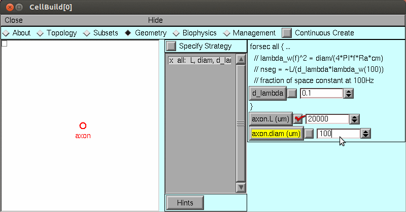

Interactive Modeling
Physical System
Giant axon from the squid: Loligo pealei
Conceptual Model
Hodgkin-Huxley cable equations

Simulation
Computational implementation of the conceptual model
We could implement this model in Python:
from neuron import h, gui
axon = h.Section(name='axon')
axon.L = 2e4
axon.diam = 100
axon.nseg = 43
axon.insert(h.hh)
But for this exercise, let’s instead use the CellBuilder tool to create the model:

Save the model in hhaxon.ses using
Using the computational model
If starting from a fresh launch of python, you can load the saved ses file by loading NEURON and its GUI: from neuron import h. gui and then selecting
Alternatively you can use NEURON to execute hhaxon.ses
Change to the appropriate directory in your terminal
Start python, and at the >>> prompt enter the commands
from neuron import h, gui
h.load_file('hhaxon.ses')
Exercises
Stimulate with current pulse and see a propagated action potential.
The basic tools you’ll need from the NEURON Main Menu
Point Manager to specify stimulation
Voltage axis and Shape plot to create graphs of v vs t and v vs x.
RunControl to run the simulation
to see a smooth evolution of the space plot in time
Change excitability by adjusting sodium channel density.
Tool needed: Shape Name
Use two current electrodes to stimulate both ends at the same time
Up to this point, the model has used a very fine spatial grid calculated from the Cell Builder’s d_lambda rule

Change nseg to 15 and see what happens